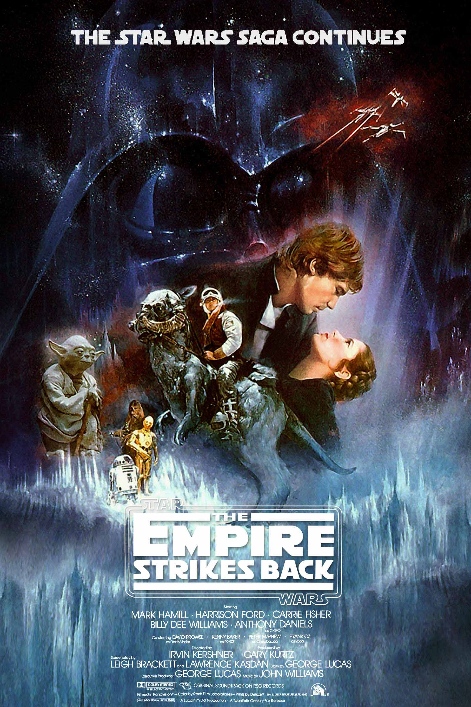
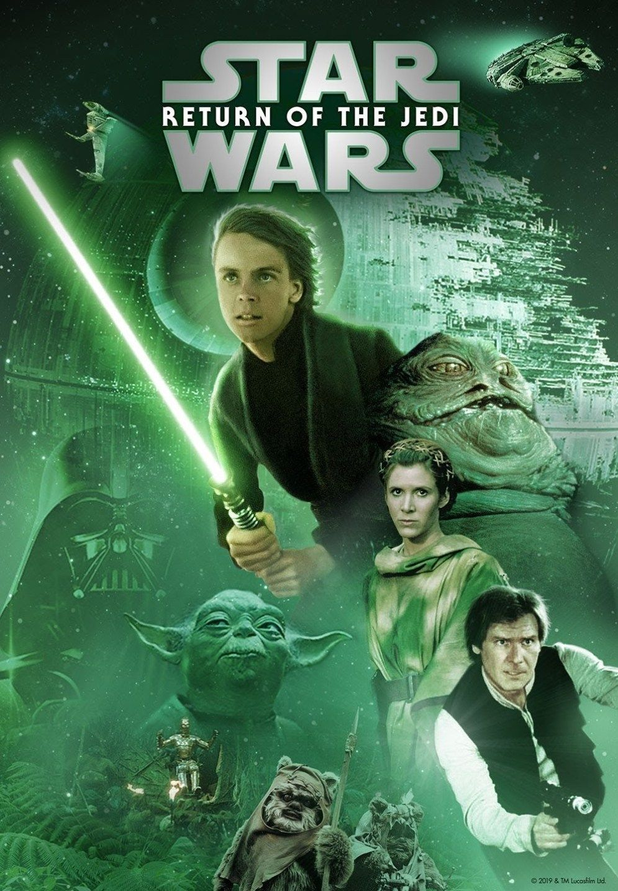
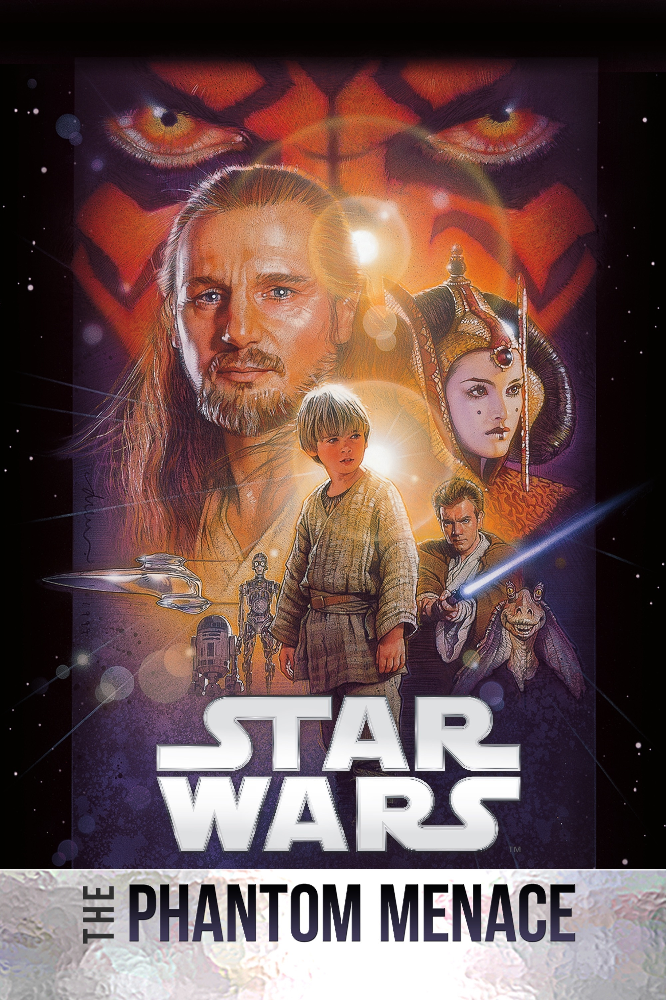
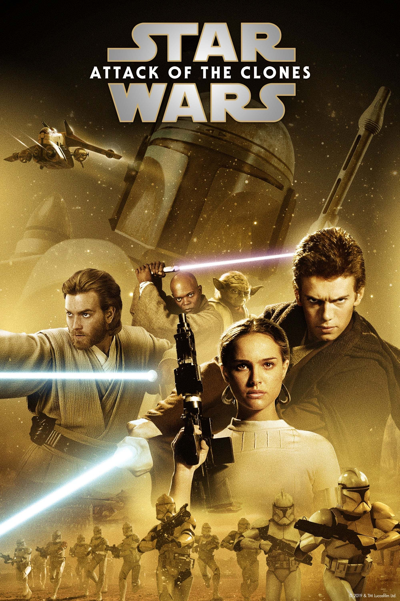
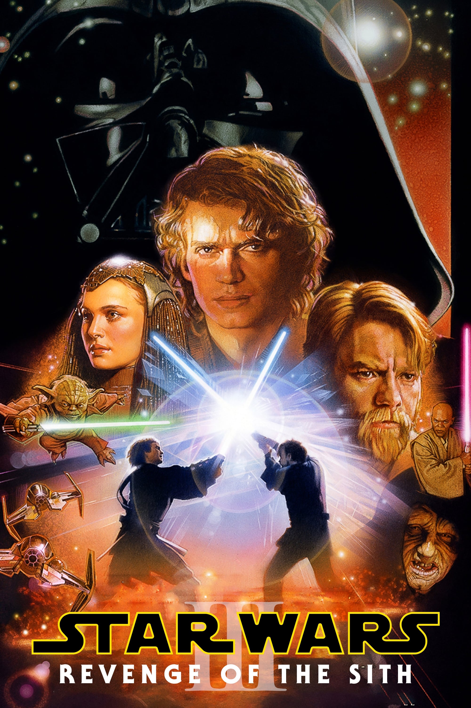
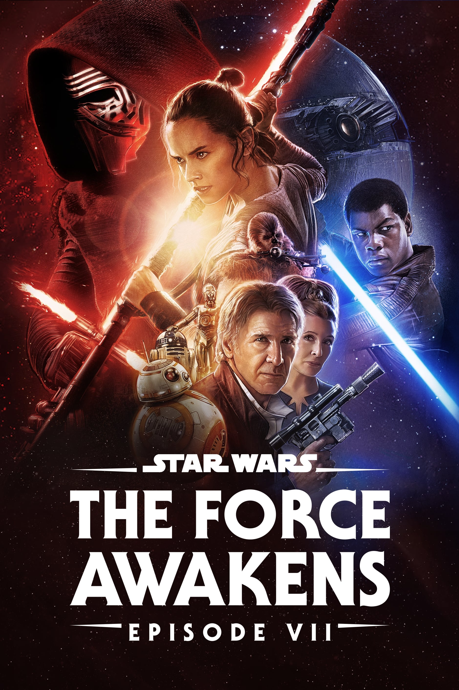
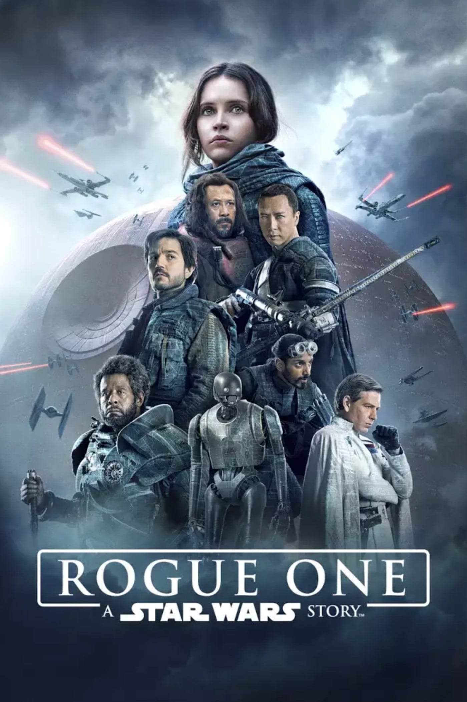
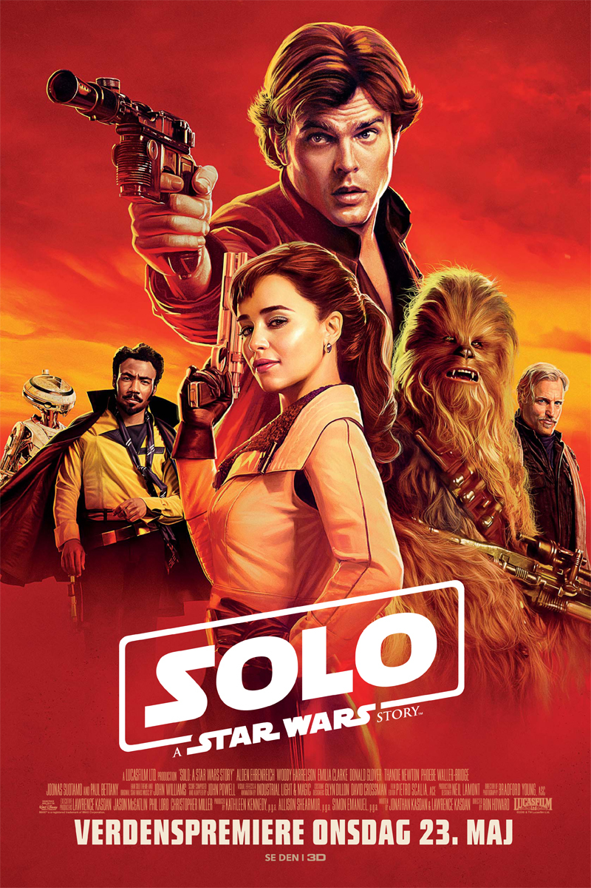

Star Wars: Episode V - The Empire Strikes Back (1980)

Star Wars: Episode VI - Return of the Jedi (1983)

Star Wars: Episode I - The Phantom Menace (1999)

Star Wars: Episode II - Attack of the Clones (2002)

Star Wars: Episode III - Revenge of the Sith (2005)

Star Wars: Episode VII - The Force Awakens (2015)

Rogue One: A Star Wars Story (2016)

Star Wars: Episode VIII - The Last Jedi (2017)

Solo: A Star Wars Story (2018)
